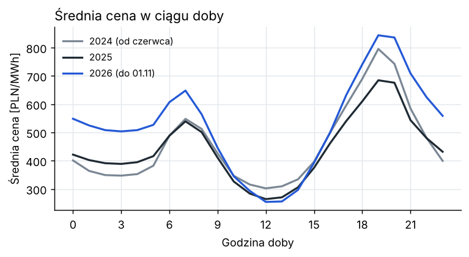
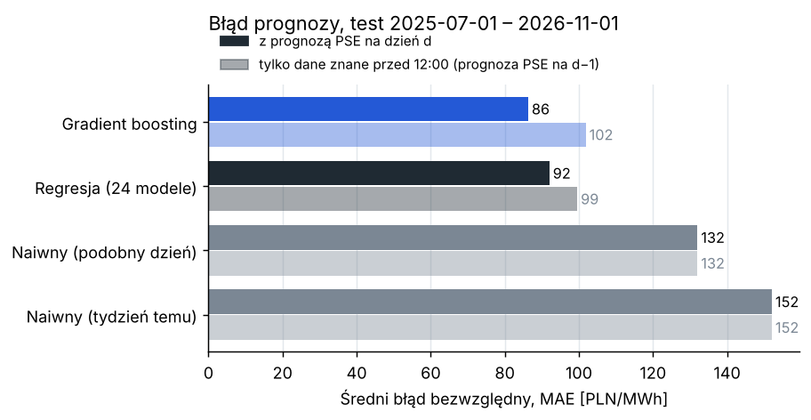
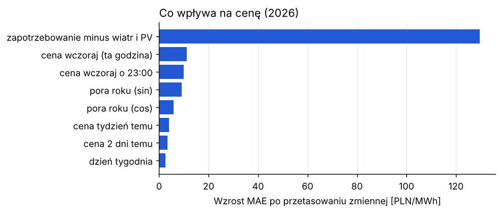
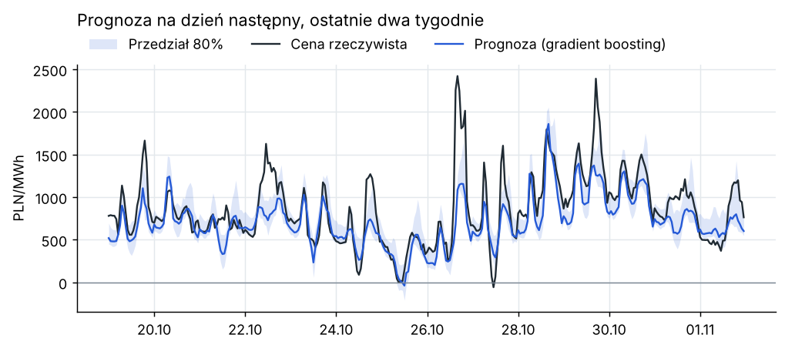
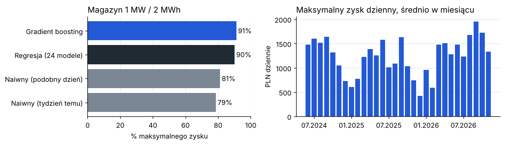

Prognoza cen energii na polskim rynku dnia następnego i wartość magazynu energii
Piotr Żandarski · listopad 2026 · dane: API PSE, 14.06.2024 – 1.11.2026 Kod i pełny opis: github.com/piotrzan/pl-power-price-forecast · piotrzan.github.io · piotrzandarski314@gmail.com
Gradient boosting ma błąd o 35% mniejszy niż prosta reguła „podobny dzień”: 86 zamiast 132 PLN/MWh przy średniej cenie 501 PLN/MWh (test na 489 dniach).
Najbardziej na cenę wpływa zapotrzebowanie pomniejszone o produkcję z wiatru i fotowoltaiki.
Magazyn 1 MW / 2 MWh planowany według modelu zarabia około 45 tys. PLN rocznie więcej niż planowany według prostej reguły.
Jeśli model zna tylko dane na pewno dostępne przed 12:00, błąd rośnie do około 100 PLN/MWh. Dużo zależy więc od prognozy wiatru i słońca na jutro.
1. Cel
Firma handlująca energią albo właściciel magazynu musi złożyć oferty na rynek dnia następnego do 12:00 dnia przed dostawą. Potrzebuje do tego prognozy ceny na każdą godzinę jutra. Sprawdzam, o ile można poprawić prognozę względem prostych reguł, co najbardziej wpływa na cenę i ile pieniędzy daje lepsza prognoza.
2. Dane
Dane pobrałem z publicznego API PSE (api.raporty.pse.pl) własnym skryptem w Pythonie:
Raport PSE
Co zawiera
csdac-pln
cena dla Polski z aukcji dnia następnego, PLN/MWh
pdgopkd
plan PSE na następną dobę: zapotrzebowanie, wiatr, fotowoltaika, MW
his-wlk-cal
rzeczywiste zapotrzebowanie, wiatr i fotowoltaika, MW
Wartości co 15 minut uśredniłem do godzin i przeliczyłem na czas polski. Okres: 14.06.2024 – 1.11.2026, razem 20 902 godziny, bez braków.
Fotowoltaika mocno obniża ceny w środku dnia, a godzin z ujemną ceną jest coraz więcej: 146 w drugiej połowie 2024, 310 w 2025 i 316 w 2026 (do 1 listopada).

Rys. 1. Średnia cena w ciągu doby. Najtaniej jest w południe, najdrożej o 19:00–20:00.
3. Metoda
Prognoza na dany dzień powstaje rano dzień wcześniej. Model korzysta z cen z poprzednich dni, planu PSE i kalendarza (godzina, dzień tygodnia, święta, pora roku).
Punkt odniesienia to dwie proste reguły: cena sprzed tygodnia oraz „podobny dzień” (w poniedziałek i weekend cena sprzed tygodnia, w pozostałe dni wczorajsza).
Regresja liniowa: osobny model dla każdej godziny (Ridge).
Gradient boosting: jeden model dla wszystkich godzin, który dobrze radzi sobie z zależnościami nieliniowymi.
Test wygląda jak praca na żywo: model uczy się na danych sprzed 1.07.2025, a co 28 dni uczy się od nowa z nowymi danymi. Żadna prognoza nie korzysta z danych z przyszłości.
Różnicę między modelami sprawdzam testem Diebolda-Mariano, żeby wiedzieć, czy nie jest przypadkowa.
Przedział 80% wyznaczam z błędów modelu z ostatnich 56 dni.
Nie wiem dokładnie, o której PSE publikuje plan na następny dzień. Dlatego liczę też wariant, w którym model zna tylko plan na dzień bieżący, na pewno dostępny przed 12:00.
4. Wyniki
Model
MAE [PLN/MWh]
RMSE [PLN/MWh]
vs. „podobny dzień”
MAE, dane sprzed 12:00
Cena sprzed tygodnia
152,0
240,6
+15%
152,0
Reguła „podobny dzień”
132,0
211,9
–
132,0
Regresja liniowa
92,0
143,3
−30%
99,5
Gradient boosting
86,3
132,4
−35%
101,8
MAE to średni błąd bezwzględny, RMSE mocniej karze duże pomyłki. Okres testu: 1.07.2025 – 1.11.2026, 489 dni.
Z pełnym planem PSE gradient boosting jest statystycznie lepszy od regresji (p < 0,001). Z danymi tylko sprzed 12:00 oba modele wypadają podobnie (p = 0,10).
Regresja kwantylowa dawała za wąski przedział: obejmował 61% cen zamiast 80%. Przedział wyznaczony z ostatnich błędów obejmuje 74%.

Rys. 2. Średni błąd prognozy w obu wariantach.

Rys. 3. O ile rośnie błąd po losowym wymieszaniu danej zmiennej (2026).
Model myli się najbardziej wieczorem o 19:00–20:00 (około 135 PLN/MWh, w nocy około 50), bo wtedy zdarzają się skoki cen powyżej 2000 PLN/MWh. Drugi problem to nagła zmiana poziomu cen: w październiku 2026 średnia cena wzrosła do 740 PLN/MWh, a model zaniżał ją średnio o 117 PLN/MWh.

Rys. 4. Prognoza i przedział 80% na tle cen rzeczywistych, ostatnie dwa tygodnie testu.
5. Wartość prognozy dla magazynu energii
Dla magazynu 1 MW / 2 MWh co dzień liczę najlepszy plan ładowania i rozładowania (programowanie liniowe) na podstawie prognozy, a zysk rozliczam po rzeczywistych cenach. Założenia: sprawność 88%, koszt zużycia baterii 20 PLN/MWh, magazyn pusty na koniec dnia.
Plan według
Zysk [PLN/dzień]
% maksimum
Rzeczywistych cen (maksimum)
1 242
100%
Gradient boosting
1 132
91%
Regresji liniowej
1 119
90%
Reguły „podobny dzień”
1 009
81%
Ceny sprzed tygodnia
977
79%
Różnica między modelem a regułą „podobny dzień” to 123 PLN dziennie, czyli około 45 tys. PLN rocznie na 1 MW. Najwięcej da się zarobić wiosną i latem, gdy różnica między ceną w południe i wieczorem jest największa.

Rys. 5. Po lewej część maksymalnego zysku dla każdego modelu, po prawej maksymalny możliwy zysk w kolejnych miesiącach.
6. Ograniczenia
Nie wiem dokładnie, o której PSE publikuje plan na następny dzień. W praktyce lepiej byłoby użyć porannego planu 5-dniowego (PK5L) albo własnej prognozy pogody.
Model nie zna cen paliw, uprawnień CO2 ani wymiany z sąsiednimi krajami. Mogłyby pomóc przy nagłych zmianach poziomu cen.
Wycena magazynu pomija rynek bilansujący i usługi dla PSE oraz zakłada, że magazyn nie wpływa na ceny.
Od 1.10.2025 ceny są kwadransowe. Następnym krokiem byłaby prognoza co 15 minut.